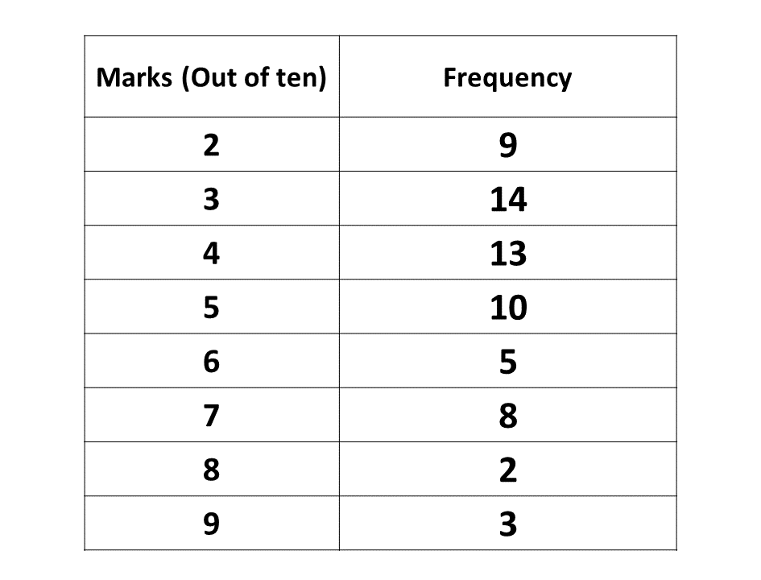

BECE
Year to Practice:
1990
1991
1992
1993
1994
1995
1996
1997
1998
1999
2000
2001
2002A
2002B
2003
2004
2005
2006
2007
2008
2009
2010
2011
2012
2013
2014
2015
2016
2017
2018
2019
2020
2021
2022
2023
2024
PAST QUESTIONS 1992
Section A
Kindly check back later as our website is still in the process of being built.
Section B
Try the questions first, using not more than 15 minutes for each question, and watch the accompanying videos to see how the questions are solved.
Question 1
\(a)\) Solve \(5 - 2x > x + 2\),
where \(x\) is a real number.
Illustrate your result on the number line.
\(b)\) Find the truth set of the equation
\(\frac{2}{3}(3y - 1) - (y + 2) = \frac{1}{3}\)
\(c)\) Factorise completely: \(mp + np - mt - nt\)
\(d)\) Make \(t\) the subject of the relation \(v = u + at\)
Question 2
A landlady rented out her house for ₵ 240,000.00 for one year. During the year, she paid 15% of the rent as income tax. She also paid 25% of the rent as property tax and spent ₵ 10,000.00 on repairs. Calculate
\(a)\) The landlady's total expenses.
\(b)\) The remainder of the rent after the landlady's expenses.
\(c)\) The percentage of the rent she spent on repairs.
Question 3
\(a)\) Using a scale of 2cm to 1 unit on both axes, draw two perpendicular lines \(OX\) and \(OY\) on a graph sheet.
\(b)\) On this graph sheet, mark the \(x-\)axis from \(-5\) to \(5\) and the \(y-\)axis from \(-6\) to \(6\).
\(c)\) Plot on the same graph sheet the points \(A(1, 1)\), \(B(4, 3)\) and \(C(2, 5)\). Join the points \(A, B\) and \(C\) to form a triangle.
\(d)\) Using the \(y\)-axis as mirror line, draw the image of the triangle \(ABC\) such that \(A \rightarrow A^\prime\), \(B \rightarrow B^\prime\) and \(C \rightarrow C^\prime\).
\(e)\) Using the \(y\)-axis as the mirror line, draw the image of triangle \(ABC\) such that
\(A \rightarrow A^{\prime\prime}\), \(B \rightarrow B^{\prime\prime}\) and \(C \rightarrow C^{\prime\prime}\).
Write down the coordinates of \(A^{\prime\prime}\), \(B^{\prime\prime}\) and \(C^{\prime\prime}\).
Question 4
The table below gives the frequency distribution of the marks obtained in a class test by a group of 64 pupils.
\(a)\) Draw a bar chart for the distribution.
\(b)\) A pupil is chosen at random from the class, what is the probability that the pupil obtained 7 marks?
Question 5
Using a ruler and a pair of compasses only:
\(a)\) Draw \(|PQ|=9cm\)
\(b)\) Construct a perpendicular to \(PQ\) at \(Q\)
\(c)\) Construct \(\angle QPS = 60^\circ\) at the point \(P\) on \(PQ\) such that \(PS = 6.5 cm\)
\(d)\) Construct a line parallel to \(PS\) through \(S\). Let the perpendicular through \(Q\) and the parallel through \(S\) meet at \(R\). Measure \(|PR|\)